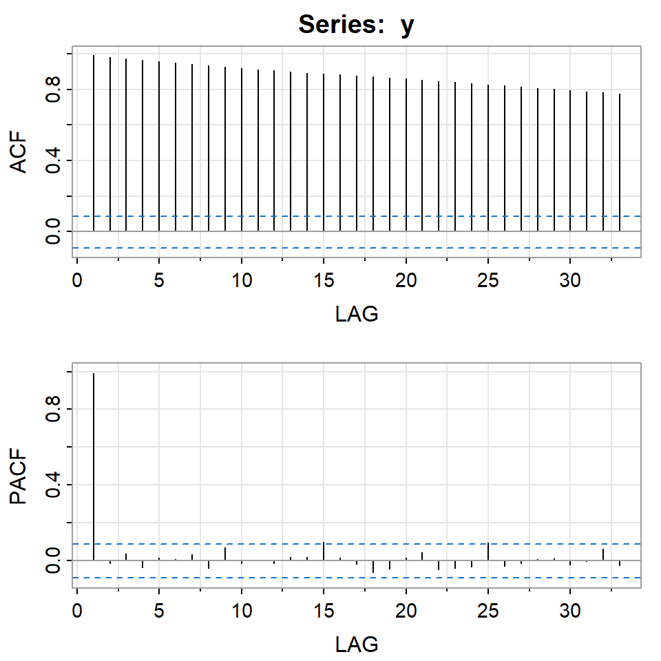

![]()
library(fGarch)
library(rugarch)
library(astsa)
library(forecast)
library(quantmod)Tema 4: Modelos no lineales. ARCH, GARCH y extensiones
1 librerías
2 Ejemplo: promedio diario industrial Dow Jone
getSymbols("^DJI",from = "2016/12/31",
to = "2018/12/31",
periodicity = "daily")[1] "DJI"y <- DJI$DJI.Close2.1 Retornos
r <- diff(log(y))[-1]
colnames(r)<-"r"
ts.plot(y)ts.plot(r)acf2(y)
[,1] [,2] [,3] [,4] [,5] [,6] [,7] [,8] [,9] [,10] [,11] [,12] [,13]
ACF 0.99 0.98 0.97 0.97 0.96 0.95 0.94 0.93 0.93 0.92 0.91 0.91 0.90
PACF 0.99 -0.02 0.04 -0.04 0.01 0.01 0.03 -0.04 0.07 -0.02 0.00 -0.02 0.02
[,14] [,15] [,16] [,17] [,18] [,19] [,20] [,21] [,22] [,23] [,24] [,25]
ACF 0.89 0.89 0.88 0.88 0.87 0.87 0.86 0.85 0.85 0.84 0.83 0.83
PACF 0.02 0.10 0.02 -0.02 -0.06 -0.04 0.01 0.04 -0.05 -0.04 -0.03 0.09
[,26] [,27] [,28] [,29] [,30] [,31] [,32] [,33]
ACF 0.82 0.81 0.81 0.80 0.79 0.79 0.78 0.78
PACF -0.03 -0.02 0.01 0.01 -0.02 -0.01 0.06 -0.02acf2(r) [,1] [,2] [,3] [,4] [,5] [,6] [,7] [,8] [,9] [,10] [,11] [,12] [,13]
ACF 0.02 -0.07 0.05 -0.03 -0.02 -0.03 0.04 -0.11 0.01 0.01 0.00 -0.02 -0.04
PACF 0.02 -0.08 0.05 -0.04 -0.01 -0.04 0.04 -0.12 0.03 -0.02 0.02 -0.03 -0.03
[,14] [,15] [,16] [,17] [,18] [,19] [,20] [,21] [,22] [,23] [,24] [,25]
ACF -0.12 -0.01 0.04 0.09 0.05 -0.04 -0.05 0.05 0.10 0.02 -0.14 0.02
PACF -0.14 0.01 0.01 0.11 0.03 -0.03 -0.07 0.06 0.07 0.04 -0.15 0.04
[,26] [,27] [,28] [,29] [,30] [,31] [,32] [,33]
ACF 0.06 -0.01 0.03 0.03 0.01 -0.14 0.05 0.08
PACF 0.04 0.02 -0.01 0.04 0.03 -0.10 0.04 0.07- Los retornos tienen colas pesadas y son asimétricos.
hist(r,breaks=25,freq=FALSE)
curve(dnorm(x,mean(r,na.rm = T),sd(r,na.rm = TRUE)),add=T,col=2)2.2 auto.arima
- Empezamos con un modelo ARMA.
auto_arima <- auto.arima(r)
summary(auto_arima)Series: r
ARIMA(1,0,1) with zero mean
Coefficients:
ar1 ma1
-0.8620 0.9465
s.e. 0.0412 0.0250
sigma^2 = 7.115e-05: log likelihood = 1679.09
AIC=-3352.18 AICc=-3352.14 BIC=-3339.54
Training set error measures:
ME RMSE MAE MPE MAPE MASE
Training set 0.0002870584 0.008418193 0.005530544 97.79074 159.9398 0.7157715
ACF1
Training set -0.03871362checkresiduals(auto_arima)
Ljung-Box test
data: Residuals from ARIMA(1,0,1) with zero mean
Q* = 6.1604, df = 8, p-value = 0.6293
Model df: 2. Total lags used: 10residuals<-auto_arima$res
acf2(residuals) [,1] [,2] [,3] [,4] [,5] [,6] [,7] [,8] [,9] [,10] [,11] [,12] [,13]
ACF -0.04 -0.02 0.01 0 -0.04 -0.01 0.02 -0.09 0.00 0.01 -0.01 -0.01 -0.04
PACF -0.04 -0.02 0.00 0 -0.04 -0.01 0.02 -0.09 -0.01 0.01 -0.01 -0.01 -0.05
[,14] [,15] [,16] [,17] [,18] [,19] [,20] [,21] [,22] [,23] [,24] [,25]
ACF -0.11 -0.01 0.05 0.07 0.05 -0.05 -0.04 0.05 0.10 0.01 -0.13 0.02
PACF -0.12 -0.02 0.03 0.08 0.06 -0.05 -0.05 0.04 0.09 0.03 -0.13 0.00
[,26] [,27] [,28] [,29] [,30] [,31] [,32] [,33]
ACF 0.06 -0.01 0.04 0.02 0.02 -0.14 0.06 0.07
PACF 0.07 -0.01 0.02 0.02 0.06 -0.11 0.03 0.06acf2(residuals^2) [,1] [,2] [,3] [,4] [,5] [,6] [,7] [,8] [,9] [,10] [,11] [,12] [,13]
ACF 0.28 0.19 0.24 0.18 0.08 0.14 0.08 0.05 0.07 0.09 0.08 0.11 0.08
PACF 0.28 0.12 0.17 0.08 -0.03 0.07 -0.01 -0.01 0.03 0.04 0.05 0.06 0.00
[,14] [,15] [,16] [,17] [,18] [,19] [,20] [,21] [,22] [,23] [,24] [,25]
ACF 0.16 0.07 0.10 0.08 0.13 0.06 0.10 0.01 0.05 0.13 0.05 0.02
PACF 0.11 -0.04 0.04 -0.01 0.08 -0.01 0.04 -0.08 0.02 0.10 -0.04 -0.02
[,26] [,27] [,28] [,29] [,30] [,31] [,32] [,33]
ACF 0.04 0.02 0.06 0.15 0.04 0.08 0.16 0.06
PACF -0.03 -0.01 0.04 0.13 -0.07 0.06 0.07 -0.03Hay autocorrelación de los residuales al cuadrado.
Indicación de que hay variabilidad condicional.
2.3 ARMA(1,1)+ARCH(1)
arma.arch1 <- garchFit(r~arma(1,1)+garch(1,0), data=r,trace=F)
round(arma.arch1@fit$matcoef, 4) Estimate Std. Error t value Pr(>|t|)
mu 0.0008 0.0006 1.2336 0.2173
ar1 -0.8282 0.0505 -16.3953 0.0000
ma1 0.9204 0.0365 25.2337 0.0000
omega 0.0000 0.0000 11.8647 0.0000
alpha1 0.3820 0.0874 4.3736 0.0000plot(arma.arch1,which=10)plot(arma.arch1,which=11)- Note que todavía existe autocorrelación de los residuales al cuadrado.
2.4 ARMA(1,1)+GARCH(1,1)
arma.garch11 <- garchFit(r~arma(1,1)+garch(1,1), data=r,trace=F)
round(arma.garch11@fit$matcoef, 4) Estimate Std. Error t value Pr(>|t|)
mu 0.0015 0.0007 2.2800 0.0226
ar1 -0.5869 0.5305 -1.1062 0.2686
ma1 0.5889 0.5449 1.0808 0.2798
omega 0.0000 0.0000 2.2750 0.0229
alpha1 0.1598 0.0400 3.9919 0.0001
beta1 0.8281 0.0431 19.2312 0.0000plot(arma.garch11,which=10)plot(arma.garch11,which=11)
:::
plot(arma.garch11,which=13)- Note que no existe autocorrelación de los residuales al cuadrado, pero los residuales no son normales.
- El modelo está bien, pero hay coeficientes no significativos.
- Procedemos a eliminarlos.
2.5 GARCH(1,1)
garch11 <- garchFit(r~garch(1,1), data=r,trace=F)
round(garch11@fit$matcoef, 4) Estimate Std. Error t value Pr(>|t|)
mu 0.0010 0.0003 3.6563 0.0003
omega 0.0000 0.0000 2.2971 0.0216
alpha1 0.1594 0.0397 4.0151 0.0001
beta1 0.8285 0.0426 19.4699 0.0000- Comparando los criterios de información, el modelo reducido es mejor.
garch11@fit$ics AIC BIC SIC HQIC
-7.151073 -7.117356 -7.151200 -7.137843 arma.garch11@fit$ics AIC BIC SIC HQIC
-7.143874 -7.093298 -7.144157 -7.124028 plot(garch11, which = 10)plot(garch11, which = 11)plot(arma.garch11,which=13)
- El modelo GARCH(1,1) va ganando, pero la normalidad no se cumple.
2.6 T-GARCH
- Empezamos con TGARCH con valor absoluto,
delta=1.
tgarch11.1 = garchFit(r~garch(1,1),delta=1,leverage=T,data=r,trace=F,include.mean=F)
arma.tgarch11.1 = garchFit(r~arma(1,1)+garch(1,1),delta=1,leverage=T,data=r,trace=F,include.mean=F)- Empezamos con TGARCH con cuadrado,
delta=2.
tgarch11.2 = garchFit(r~garch(1,1),delta=2,leverage=T,data=r,trace=F,include.mean=F)
arma.tgarch11.2 = garchFit(r~arma(1,1)+garch(1,1),delta=2,leverage=T,data=r,trace=F,include.mean=F)garch11@fit$ics AIC BIC SIC HQIC
-7.151073 -7.117356 -7.151200 -7.137843 tgarch11.1@fit$ics AIC BIC SIC HQIC
-7.123718 -7.090002 -7.123845 -7.110488 arma.tgarch11.1@fit$ics AIC BIC SIC HQIC
-7.199735 -7.149160 -7.200019 -7.179890 tgarch11.2@fit$ics AIC BIC SIC HQIC
-7.173335 -7.139618 -7.173461 -7.160104 arma.tgarch11.2@fit$ics AIC BIC SIC HQIC
-7.166148 -7.115572 -7.166431 -7.146302 - El modelo ganador es
arma.tgarch11.1
round(arma.tgarch11.1@fit$matcoef, 4) Estimate Std. Error t value Pr(>|t|)
ar1 -0.8429 0.0667 -12.6414 0
ma1 0.8996 0.0596 15.0830 0
omega 0.0005 0.0001 4.4732 0
alpha1 0.1494 0.0292 5.1203 0
gamma1 0.7858 0.1627 4.8302 0
beta1 0.8284 0.0297 27.9142 0plot(arma.tgarch11.1, which = 10)plot(arma.tgarch11.1, which = 11)
plot(arma.tgarch11.1,which=13)2.7 EGARCH
egarch11=ugarchfit(ugarchspec(mean.model=list(armaOrder=c(1,1)),
variance.model=list(model="eGARCH",garchOrder=c(1,1),
submodel=NULL,external.regressors=NULL, variance.targeting = FALSE)),r)
round(egarch11@fit$matcoef,4) Estimate Std. Error t value Pr(>|t|)
mu 0.0007 0.0004 1.8398 0.0658
ar1 -0.9057 0.0215 -42.0812 0.0000
ma1 0.9470 0.0170 55.8450 0.0000
omega -0.5505 0.0490 -11.2374 0.0000
alpha1 -0.1584 0.0292 -5.4328 0.0000
beta1 0.9435 0.0051 183.8661 0.0000
gamma1 0.2534 0.0421 6.0259 0.0000infocriteria(egarch11)
Akaike -7.175679
Bayes -7.116675
Shibata -7.176064
Hannan-Quinn -7.152526plot(egarch11, which=11)plot(egarch11, which=9)- Todo parece indicar que TGARCH tiene mejor ajuste pero los residuales no son normales.
infocriteria(egarch11)
Akaike -7.175679
Bayes -7.116675
Shibata -7.176064
Hannan-Quinn -7.152526arma.tgarch11.1@fit$ics AIC BIC SIC HQIC
-7.199735 -7.149160 -7.200019 -7.179890 2.8 Intentos con otras distribuciones
arma.tgarch11.snorm = garchFit(r~arma(1,1)+garch(1,1),delta=1,leverage=T,cond.dist="snorm",
data=r,trace=F,include.mean=F)
arma.tgarch11.ged = garchFit(r~arma(1,1)+garch(1,1),delta=1,leverage=T,cond.dist="ged",
data=r,trace=F,include.mean=F)
arma.tgarch11.sged = garchFit(r~arma(1,1)+garch(1,1),delta=1,leverage=T,cond.dist="sged",
data=r,trace=F,include.mean=F)
arma.tgarch11.std = garchFit(r~arma(1,1)+garch(1,1),delta=1,leverage=T,cond.dist="std",
data=r,trace=F,include.mean=F)
arma.tgarch11.sstd = garchFit(r~arma(1,1)+garch(1,1),delta=1,leverage=T,cond.dist="sstd",
data=r,trace=F,include.mean=F)arma.tgarch11.snorm@fit$ics AIC BIC SIC HQIC
-7.220865 -7.161861 -7.221250 -7.197712 arma.tgarch11.ged@fit$ics AIC BIC SIC HQIC
-7.269333 -7.210328 -7.269717 -7.246179 arma.tgarch11.sged@fit$ics AIC BIC SIC HQIC
-7.285290 -7.217856 -7.285791 -7.258829 arma.tgarch11.std@fit$ics AIC BIC SIC HQIC
-7.268835 -7.209830 -7.269220 -7.245681 arma.tgarch11.sstd@fit$ics AIC BIC SIC HQIC
-7.282483 -7.215050 -7.282985 -7.256022 - El modelo ganador es
arma.tgarch11.sged.
round(arma.tgarch11.sged@fit$matcoef, 4) Estimate Std. Error t value Pr(>|t|)
ar1 -0.8105 0.1250 -6.4858 0.0000
ma1 0.8659 0.1257 6.8903 0.0000
omega 0.0004 0.0001 3.1025 0.0019
alpha1 0.1495 0.0399 3.7443 0.0002
gamma1 0.6927 0.2073 3.3415 0.0008
beta1 0.8383 0.0398 21.0874 0.0000
skew 0.8681 0.0450 19.3077 0.0000
shape 1.1957 0.1017 11.7524 0.0000plot(arma.tgarch11.sged, which = 10)plot(arma.tgarch11.sged, which = 11)plot(arma.tgarch11.sged, which = 13)